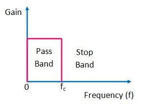
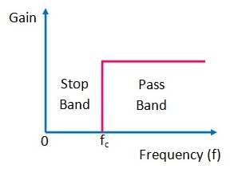
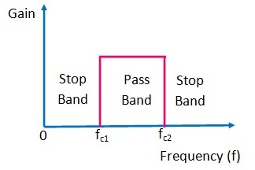
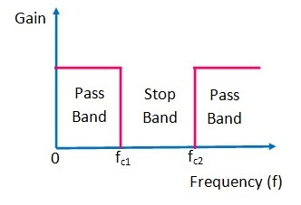
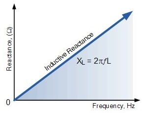
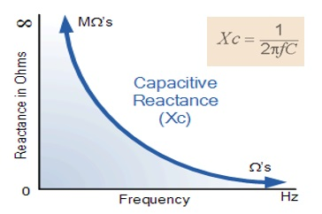
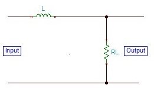
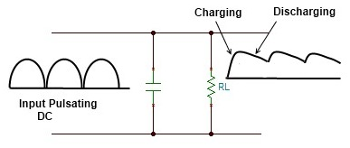
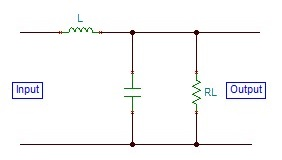
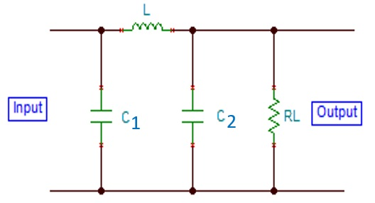

Filter
Electronic filters are circuits which perform signal processing functions, specifically to remove unwanted frequency components from the signal, to enhance wanted ones. In other words, it is sometimes desirable to have circuits capable of selectively filtering one frequency or range of frequencies out of a mix of different frequencies in a circuit. A circuit designed to perform this frequency selection is called a filter circuit, or simply a filter.
Common filter circuit designs are for, Low-pass, High-pass, band-pass and band-stop filter operations as described below:
Low-Pass Filter:
A low-pass filter passes low frequency signals, and rejects signals at frequencies above the filter's cutoff frequency. Low-pass filters are used whenever high frequency components must be removed from a signal. The frequencies between 0 and fc, are called passband frequencies, while the frequencies above fc are called as stopband frequencies. Therefore the bandwidth is fc.High-Pass Filter:

A filter that passes signals above a cutoff frequency fc is a high pass filter.The frequencies between 0 and fc, are blocked, while the frequencies above fc are passed.
Band-Pass Filter:
When the filter circuit passes signals that are above one cutoff frequency and below a second cutoff frequency, it is called a band pass filter. As illustrated in the figure, the band pass filter has a pass band between two cutoff frequencies fc2 and fc1, where fc2 > fc1 and two stop bands: 0<f<fc1 and f>fc2.
Band-Stop Filter:

The band stop or band reject filter performs exactly opposite to the band pass filter. It has a band stop between two cut off frequencies fc2 and fc1 and two pass bands: 0<f<fc1 and f>fc2.
Some of the filter circuit configurations which are the part of the power supply chain after the rectifier circuit, are explained next:
They remove the AC components from the rectified output, but allows the DC component to reach the load. They consist of or is a combination of the passive components, namely, Resistor (R), Capacitor (C) and Inductor (L).The inductor (L) and Capacitor (C) are used as main filtering components because of the following characteristics:
Inductor (L):

Inductive reactance increases with the increase in the frequency. So, the inductor passes DC signal but it blocks the AC or high frequency signals.
Capacitor (C):
 Capacitive reactance decreases with the increase in the frequency. So, the capacitor passes AC signal but it blocks the DC or Low frequency signals.
Resistor (R):
Resistor helps to introduce the time constant of the circuit to control the charging and discharging of a capacitor required for the filtering action.· Practical filter circuit designs:
Inductor filter Capacitor filter LC filter CLC or Pi or π filter
Inductor Filter:
The inductor filter consists of an inductor L which is inserted between the rectifier and the load resistance RL. The rectifier contains AC as well as DC components. When the output passes through the inductor, it offers a high resistance to the AC component and no resistance to DC components. Thus, it blocks AC components and passes only the DC to the load.
Capacitor Filter:
A capacitor here is connected across the load, which gets charged during the rise of the voltage cycle. This charge is supplied to the load by discharging during the fall in the voltage cycle. This process is repeated for each cycle to remove the ripples or AC components from the signal.
LC Filter:
An inductor is connected in series with the load, which passes DC and blocks AC components. A capacitor is connected in parallel to the load, which passes the AC components from the signal coming through the inductor and passes smooth DC signal to the load, after removing the ripples.
CLC or Pi (π) Filter:
It consists of one inductor and two capacitors connected across its each end. These three components are arranged in the shape of Greek letter Pi (π). The input capacitor C1 offers very low reactance to the AC ripples, hence major part of the filtering is done by C1. The remaining ripples are further removed by the following LC section.These are all basically the low-pass filters which removes the high frequency ripples and outputs the smooth DC to the load.
Additional Resources:
https://www.electronics-tutorials.ws/filter/filter_1.html
https://www.daenotes.com/electronics/devices-circuits/filter-circuits
https://electronicspost.com/what-is-a-filter-describe-the-classification-of-filters/